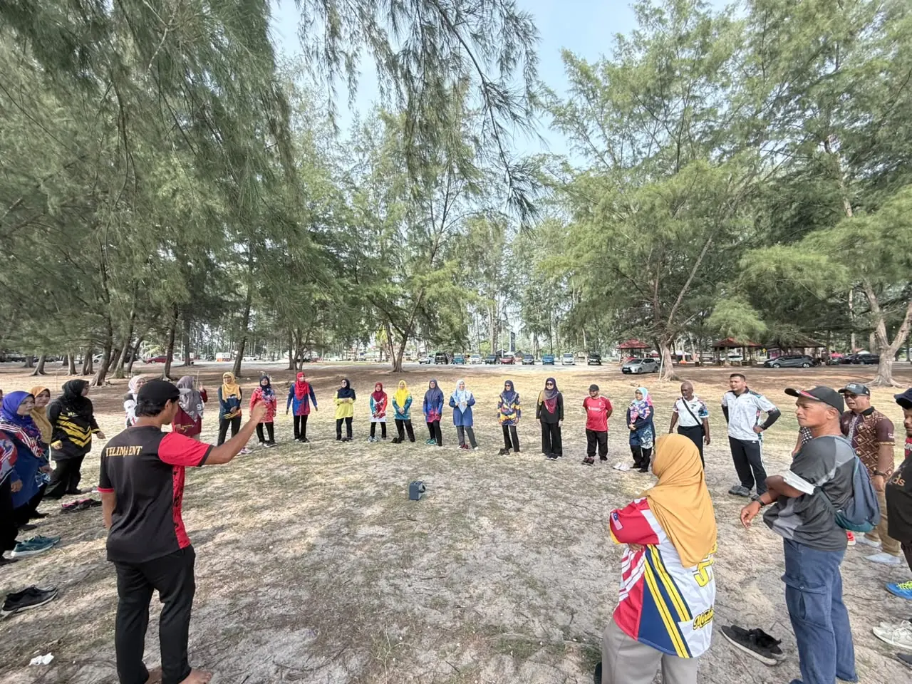
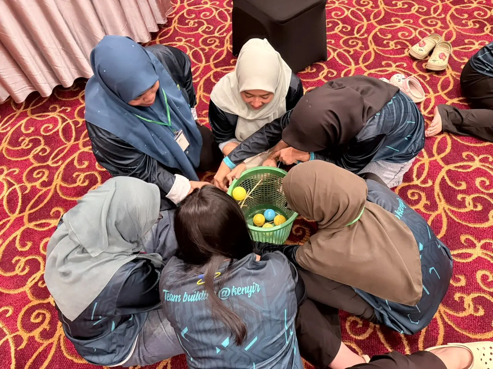
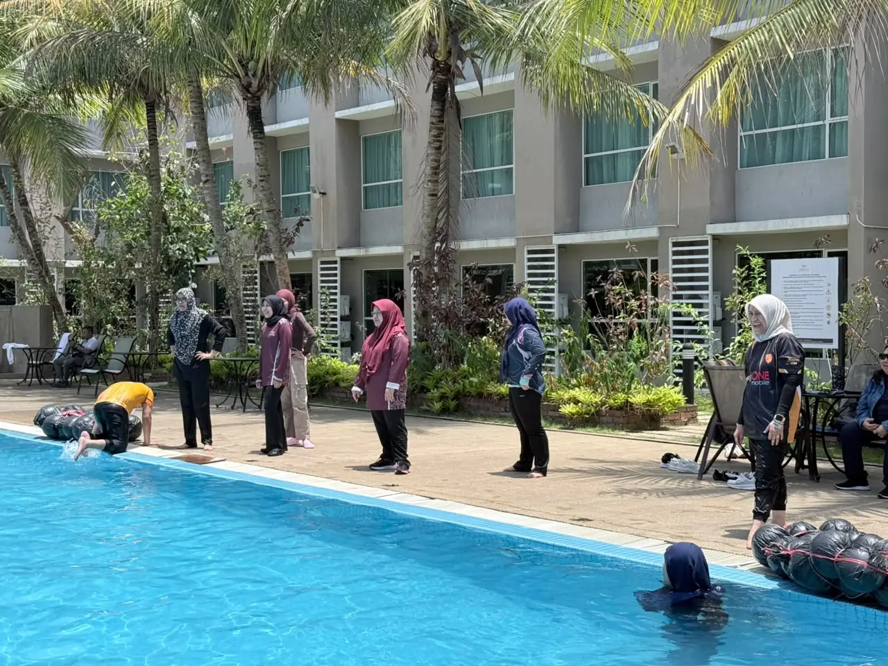
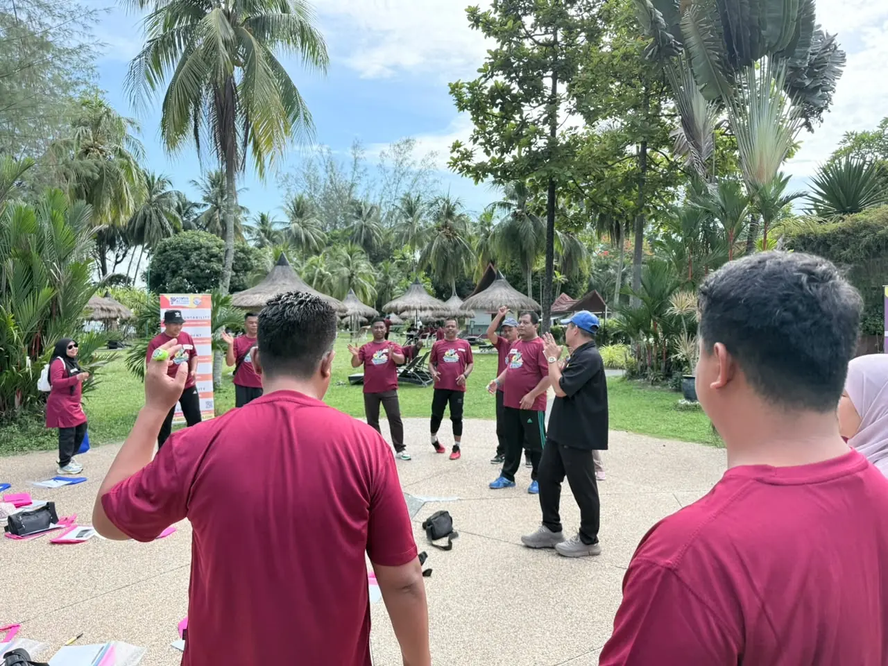
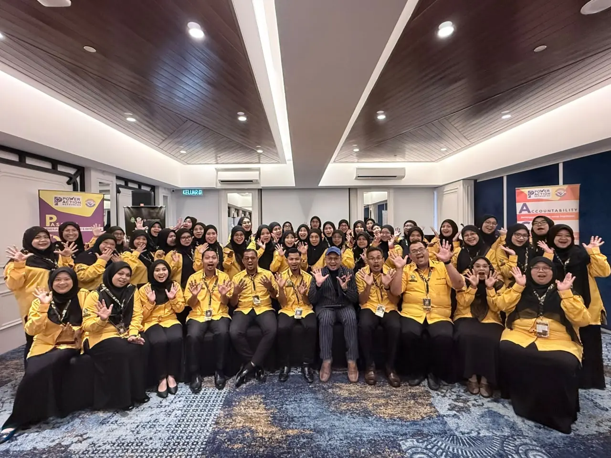

Team Building di Kelantan: Panduan Lengkap untuk Syarikat & Organisasi
Merancang team building di Kelantan untuk pasukan anda? Panduan ini menerangkan apa yang patut ada dalam program team building yang baik, pilihan lokasi di Kelantan, jenis aktiviti dalam dan luar dewan, serta langkah merancangnya dari awal hingga selesai.

Apa itu team building dan kenapa syarikat di Kelantan memerlukannya?
Team building (atau teambuilding) ialah program berstruktur yang membantu sekumpulan pekerja berkomunikasi dengan lebih baik, saling mempercayai dan bertindak sebagai satu pasukan. Ia bukan sekadar "hari bermain" — aktiviti dipilih untuk mencapai objektif tertentu, kemudian dibincangkan supaya pengajarannya dibawa balik ke tempat kerja.
Bagi syarikat, kilang, agensi kerajaan dan organisasi di Kelantan, team building biasanya dianjurkan apabila:
- pasukan baharu dibentuk atau ramai pekerja baharu menyertai organisasi;
- komunikasi antara jabatan atau antara penyelia dan staf mula renggang;
- organisasi mahu memperkukuh nilai kerja seperti tanggungjawab, komitmen dan kerjasama;
- pasukan memerlukan "tenaga baharu" selepas tempoh kerja yang mencabar.
Jika anda mencari penyedia team building Kelantan yang memahami budaya kerja tempatan, pilih program yang bermula dengan objektif organisasi anda — bukan pakej aktiviti siap. Di Power Action Resources, program High-Performance Team Building direka untuk mengukuhkan komunikasi, kerjasama dan keupayaan pasukan bertindak bersama.
Jenis aktiviti team building: dalam dewan, luar dewan dan air
Program team building yang baik menggabungkan beberapa jenis aktiviti supaya semua peserta — tidak kira umur, jawatan atau tahap kecergasan — dapat terlibat.
1. Aktiviti dalam dewan
Sesuai untuk semua cuaca dan semua peserta. Contohnya cabaran kumpulan menggunakan kad, bola dan bakul, belon, kapal terbang kertas, membina mengikut arahan, atau aktiviti melukis secara berkumpulan. Aktiviti seperti ini melatih komunikasi, perancangan dan pembahagian tugas.

2. Aktiviti luar (outdoor)
Kelantan mempunyai banyak kawasan pantai, taman dan tapak perkhemahan yang sesuai untuk aktiviti luar — bulatan interaktif, tugasan berkumpulan di padang dan cabaran mencari petunjuk. Udara terbuka membantu peserta lebih santai dan terbuka.
3. Aktiviti air
Jika lokasi mempunyai kolam renang, cabaran air berpasukan boleh menjadi kemuncak program. Aktiviti air perlu dirancang dengan teliti dari segi keselamatan dan disesuaikan dengan kemampuan peserta.

Memilih lokasi team building Kelantan yang sesuai
Lokasi mempengaruhi jenis aktiviti, kos dan pengalaman peserta. Antara pilihan biasa di Kelantan:
- Hotel atau dewan di Kota Bharu — mudah diakses, sesuai untuk sesi dalam dewan, ceramah dan bengkel.
- Resort tepi pantai — gabungan aktiviti dewan, taman dan kolam dalam satu lokasi.
- Tapak perkhemahan dan chalet — sesuai untuk program berskala besar dan aktiviti luar, contohnya di kawasan Machang.
- Premis syarikat sendiri — jimat kos dan masa perjalanan; sesuai untuk sesi separuh hari.
Power Action Resources pernah mengendalikan program di pelbagai jenis lokasi — dari dewan hotel dan gudang tempat kerja peserta, hinggalah ke tepi pantai dan tapak perkhemahan. Lihat contoh suasananya di galeri program.

7 langkah merancang team building di Kelantan
- Tetapkan objektif. Apa yang mahu diubah? Komunikasi, kerjasama antara jabatan, semangat kerja, atau nilai organisasi?
- Kenal pasti peserta. Bilangan, julat umur, jawatan dan tahap kecergasan menentukan jenis aktiviti.
- Pilih format. Separuh hari, sehari penuh, atau program bermalam.
- Pilih lokasi. Sesuaikan dengan aktiviti, bajet dan jarak perjalanan peserta.
- Bincang dengan penyedia latihan. Kongsi objektif dan cabaran pasukan supaya program dapat disesuaikan.
- Semak kelayakan HRD Corp. Jika syarikat anda majikan berdaftar, semak sama ada program boleh dituntut.
- Rancang tindakan susulan. Pastikan pengajaran program diterjemah kepada tindakan di tempat kerja.
Contoh aliran program team building sehari
Setiap program disesuaikan, tetapi aliran asas program team building sehari biasanya begini:
- Pembukaan & aktiviti memecah ais. Peserta berkenalan, suasana menjadi santai dan semua orang mula bergerak.
- Sesi pengenalan objektif. Fasilitator menerangkan tujuan program dan nilai yang akan diterokai sepanjang hari.
- Cabaran berkumpulan dalam dewan. Aktiviti yang menuntut komunikasi, perancangan dan pembahagian tugas.
- Aktiviti luar atau cabaran air. Jika lokasi membenarkan, aktiviti fizikal yang menguji kerjasama di bawah tekanan masa.
- Sesi refleksi. Peserta membincangkan apa yang berlaku dan mengaitkannya dengan situasi di tempat kerja.
- Komitmen tindakan & penutup. Setiap kumpulan menetapkan apa yang akan dibuat secara berbeza selepas program, diikuti penyampaian sijil atau hadiah.
Untuk program bermalam, aliran ini boleh diperluas dengan aktiviti malam, sesi perkongsian dan cabaran yang lebih mendalam.

Kesilapan biasa semasa merancang team building
- Tiada objektif. Program menjadi sekadar hari bersuka-ria tanpa kesan selepasnya.
- Aktiviti terlalu lasak untuk semua peserta. Peserta yang kurang cergas atau lebih berusia akan tersisih. Pilih gabungan aktiviti yang inklusif.
- Jadual terlalu padat. Tanpa masa refleksi, peserta penat tetapi tidak belajar apa-apa.
- Tiada susulan. Tanpa komitmen tindakan dan pemantauan, semangat hilang dalam beberapa hari.
- Lewat merancang. Lokasi popular di Kelantan, terutamanya pada musim cuti, perlu ditempah lebih awal.
Ingin tahu apa yang menjadikan program benar-benar memberi kesan? Baca 7 ciri team building berkesan.
Adakah team building boleh dituntut melalui HRD Corp?
Power Action Resources ialah HRD Corp Registered Training Provider dan program ditawarkan sebagai HRD Corp Claimable. Namun, status tuntutan bergantung pada kelulusan program, majikan dan syarat HRD Corp yang berkuat kuasa — sila sahkan kelayakan semasa perbincangan. Maklumat lanjut di bahagian HRD Corp.
Soalan lazim
Berapa lama tempoh program team building yang sesuai?
Bergantung pada objektif dan bilangan peserta. Program boleh dijalankan separuh hari, sehari penuh atau bermalam; tempoh dan aktiviti disesuaikan dengan keperluan organisasi.
Bolehkah team building dijalankan di premis syarikat sendiri?
Boleh. Aktiviti dalam dewan seperti cabaran kumpulan, melukis berkumpulan dan bengkel boleh dijalankan di bilik mesyuarat, dewan atau ruang lapang di premis syarikat.
Adakah program team building Power Action Resources boleh dituntut HRD Corp?
Power Action Resources ialah HRD Corp Registered Training Provider dan program ditawarkan sebagai HRD Corp Claimable, tertakluk kepada kelulusan program, majikan dan syarat HRD Corp yang berkuat kuasa.